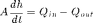
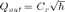
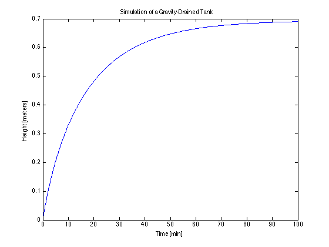

Simulation of a Gravity Drained Tank
File: Ch02_GravityTank.m
This example demonstrates the key steps in simulating the behavior of a gravity drained tank. The liquid height in the tank is described by a simple differential equation

where is a function of liquid height known as Torricelli's law

Contents
Step 1. Define parameters
Provide values for all relevant parameters. Use comments to describe the parameters and units.
Cv = 120; % Outlet valve constant [liters/min/meter^1/2] Qin = 100; % Inlet flowrate [liters/min] A = 1.5; % Tank area [meter^2]
Step 2. Define any functional relationships
Qout = @(h) Cv*sqrt(h);
Step 3. Write function to evaluate RHS of the differential equations
hdot = @(t,h) (Qin - Qout(h))/A/1000;
Step 4. Solve for given initial conditions and time span
h0 = 0; tstop = 100; soln = ode45(hdot,[0 tstop],h0)
soln =
solver: 'ode45'
extdata: [1x1 struct]
x: [1x18 double]
y: [1x18 double]
stats: [1x1 struct]
idata: [1x1 struct]
Step 5. Evaluate and display the solution
t = 0:0.1:tstop; h = deval(soln,t); plot(t,h); xlabel('Time [min]'); ylabel('Height [meters]'); title('Simulation of a Gravity-Drained Tank');